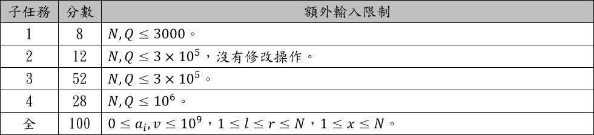

題目 Problem
題目連結：https://zerojudge.tw/ShowProblem?problemid=c651
敘述 Description
給你一段 $N$ 個正整數的序列 $a_1∼a_N$ ，請你執行 $Q$ 筆操作。
輸入 Input
第一行有兩個正整數 $N,Q$ 。
第二行有 $N$ 個非負整數 $a_i$ 。
接下來有 $Q$ 行，每行代表一個操作。
如果是 $0\ l\ r$ ，代表詢問 $[l,r]$ 區間的每個數字做 $xor$ 運算之後的值。
如果是 $1\ x\ v$ ，代表將 $a_x$ 置換成 $v$ 。
※ $xor$ 即代表C++中的位元運算「^」。
輸出 Output
對於每個詢問，輸出詢問區間的每個數字做 $xor$ 運算之後的值。
範例輸入 Sample Input
1 | 5 3 |
範例輸出 Sample Output
1 | 30 |
提示 Hint
本題共有四組測試題組，條件限制如下所示。每一組可有一或多筆測試資料，該組所有測試資料皆需答對才會獲得該組分數。

cout << (16^9^1^5^3) << “\n”; 輸出即為30。
觀察一下 xor 的性質，不然這題拿不滿XD。輸入卡很緊，記得加優化。
題解 Solution
遇到一般的RMQ+單點修改問題，通常有幾種解題方式
- 線段樹 Segment Tree
- 二元索引樹（樹狀樹组） Binary Index Tree (Fenwick tree)
不過這題時限只有$0.5$秒
如果用前綴 $XOR$ 單點修改變成$O(N)$
如果用線段樹遞迴查詢可能會有點慢（有實做過，只有$72\%$，其他的被TLE）
這題可以使用BIT，也就是二元索引樹，但要如何使用呢？
（以下把二元索引樹 簡稱 BIT）
XOR 真值表＆性質
| $A$ | $B$ | $A⊕B$ |
|---|---|---|
| $0$ | $0$ | $0$ |
| $1$ | $0$ | $1$ |
| $0$ | $1$ | $1$ |
| $1$ | $1$ | $0$ |
恆等律：$X⊕0=X$
歸零律：$X⊕X=0$
自反性：$A⊕B⊕B=A⊕(B⊕B)=A⊕0=A$
其中的歸零律跟自反性就是我們要使用的
拿到BIT的模板應該都是求區間和
假設我們要求$[L,R]$的區間和
是不是只要$sum(R)-sum(L-1)$？
這題改成區間 XOR
BIT 初始化就改成 XOR（程式碼 Line 15）
然後把求前綴和的 $+$ 改成 XOR（程式碼 Line 9）
就變成 前綴 XOR 了
查詢只要輸出 $xxor(R)⊕xxor(L-1)$（程式碼 Line 37）
單點修改呢？
先把原本的數字跟要變成的數字做 XOR 變成 $val$（程式碼 Line 40）
利用歸零律跟自反性
後面需要更新的數字，統一跟 $val$ 做 XOR
單點修改就完成了
程式碼 Accepted Code
1 |
|
後記 Afterword
每次做到有關 XOR 的題型
都讓我想到有一題原本 時間 $O(N\log{N})$ 空間 $O(N)$
最後複雜度可以壓在 時間 $O(N)$ 空間 $O(1)$
下一篇就來寫這題的報告書